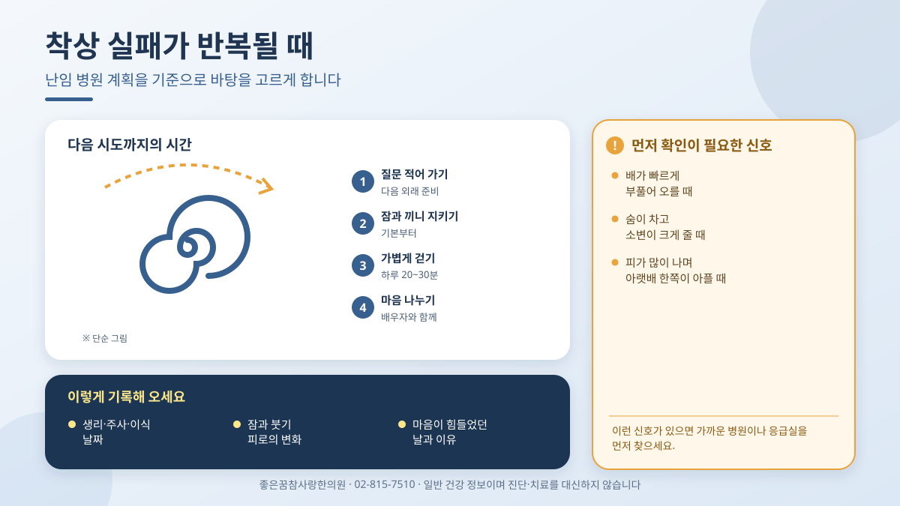

이종호 한의사 감수좋은꿈참사랑한의원 대표원장 (한의사 면허번호 19769)발행 2026-11-26 · 수정 2026-11-26
이 글의 차례
피검사 결과를 알려 주는 문자가 오기 전, 휴대폰을 몇 번이나 들었다 놓습니다. 이번에는 다를 거라고, 이번에는 조심했으니까 괜찮을 거라고 스스로를 다독였지만 화면에 뜬 숫자는 또 같은 이야기를 합니다. 그날 저녁은 밥이 넘어가지 않고, 다음 날 출근길에는 아무렇지 않은 척하는 것이 가장 힘듭니다.
시험관 시술에서 배아를 여러 번 이식했는데도 착상이 되지 않는 것을 흔히 반복 착상 실패라고 부릅니다. 몇 번을 기준으로 하는지는 병원과 상황에 따라 조금씩 다르지만, 좋은 배아를 이식했는데도 결과가 이어서 좋지 않을 때 원인을 한 번 더 살펴보는 계기로 삼습니다.
이 시간을 지나고 계신 분들께 먼저 드리고 싶은 말씀이 있습니다. 결과가 좋지 않았던 것은 이식 뒤에 계단을 올랐거나, 커피를 한 잔 마셨거나, 마음을 편히 먹지 못해서가 아닙니다. 스스로를 탓하는 마음부터 조금 내려놓으셨으면 합니다.
왜 착상이 반복해서 어려울까요
착상은 배아와 자궁 내막이 서로 맞물려야 이루어지는 과정입니다. 그래서 원인도 크게 배아 쪽, 자궁 쪽, 몸 전체의 상태 쪽으로 나누어 생각합니다. 어느 한 가지로 딱 떨어지기보다 여러 요인이 겹쳐 있는 경우가 많습니다.
배아 쪽에서는 겉으로 보기에 좋은 배아라도 염색체에 변화가 있으면 착상이 어렵거나 초기에 멈출 수 있습니다. 이 비율은 나이가 들수록 높아지는 경향이 있어, 같은 노력에도 결과가 달라지는 가장 큰 이유가 되기도 합니다.
자궁 쪽에서는 내막의 두께와 상태, 자궁 안의 용종이나 근종, 유착, 만성적인 염증, 자궁 모양의 차이 등을 살핍니다. 난임 병원에서는 필요에 따라 자궁경 검사 같은 방법으로 자궁 안을 직접 확인하기도 합니다.
몸 전체의 상태로는 갑상선 기능, 혈당, 혈액이 잘 굳는 경향, 면역과 관련된 요인, 체중 등을 함께 봅니다. 어떤 검사를 할지, 결과를 어떻게 해석할지는 난임 병원의 전문 영역이니 궁금한 점은 그곳에서 충분히 설명을 듣는 것이 좋습니다.
그리고 많은 경우에 검사를 다 해도 뚜렷한 원인을 찾지 못합니다. 이것이 가장 답답한 지점이지만, 원인이 보이지 않는다는 것이 곧 가능성이 없다는 뜻은 아닙니다. 다음 시도의 방법을 조정하며 계속 길을 찾는 경우가 많습니다.
난임 병원과 무엇을 상의하면 좋을까요
결과가 좋지 않았던 뒤 다음 외래에서는 감정이 앞서 묻고 싶은 것을 다 묻지 못하고 나오는 경우가 많습니다. 미리 질문을 적어 가시면 도움이 됩니다.
- 지금까지 이식한 배아의 상태는 어떠했나요?
- 자궁 내막이나 자궁 안 상태를 추가로 확인할 필요가 있나요?
- 추가로 받아 볼 만한 혈액 검사나 다른 검사가 있나요?
- 다음 시도에서 바뀌는 부분은 무엇인가요?
- 다음 시도까지 몸을 얼마나 쉬게 하는 것이 좋을까요?
배우자도 함께 외래에 가서 설명을 듣는 것이 좋습니다. 남성 쪽 검사 결과도 다시 한번 확인하고, 두 사람이 같은 정보를 가지고 다음 계획을 정하면 서로를 이해하는 데에도 도움이 됩니다.
몸은 시술 사이에 무엇을 기억할까요
시험관 시술은 몸에도 큰 일입니다. 과배란 주사와 호르몬제, 채취, 이식, 결과를 기다리는 시간이 이어지며 몸은 몇 주 동안 평소와 다른 상태로 지냅니다. 결과가 좋지 않았던 뒤에는 생리가 다시 시작되며 몸이 원래 리듬으로 돌아오는 시간이 필요합니다.
이 시기에 붓기, 피로, 아랫배 묵직함, 잠 문제를 말씀하시는 분이 많습니다. 몸이 회복할 시간을 충분히 갖는 것이 다음 시도의 바탕이 됩니다. 쉬는 기간을 얼마나 둘지는 난임 병원과 상의하되, 그 사이의 생활은 스스로 챙겨 볼 수 있습니다.
한의학에서는 이런 시기의 몸을 아랫배가 차고 순환이 더딘 흐름, 기운과 혈이 많이 쓰여 지친 흐름, 긴장이 쌓여 잠과 소화가 흔들리는 흐름 등으로 나누어 설명하기도 합니다. 진찰할 때 몸의 경향을 읽는 전통적인 설명이지 착상의 원인을 진단하는 말은 아니며, 생활과 진료 방향을 정하는 참고로 씁니다.
일상의 바탕을 고르게 하는 일
착상을 위해 특별히 해야 하는 일을 찾으시는 분이 많은데, 실제로는 평범한 생활의 바탕을 고르게 하는 것이 가장 중요합니다. 잠, 식사, 움직임, 체중, 담배와 술, 이 다섯 가지를 차분히 살펴보세요.
잠은 매일 비슷한 시각에 들고 일어나는 것이 좋습니다. 식사는 거르지 말고 단백질과 채소, 통곡물을 고르게 드세요. 걷기처럼 가벼운 움직임을 꾸준히 이어 가되, 너무 힘든 운동은 시술 일정에 맞춰 병원과 상의하세요.
담배는 부부 모두 끊는 것이 좋고, 술은 줄이거나 쉬는 쪽을 권합니다. 엽산 같은 영양제는 난임 병원에서 권하는 대로 드시고, 그 밖의 영양제를 새로 시작하실 때는 드시는 약과 함께 병원에 알려 주세요. 좋다는 것을 많이 더하기보다 기본을 지키는 것이 먼저입니다.
체중도 한 번 살펴볼 만합니다. 너무 마르거나 체중이 많이 나가는 경우 모두 호르몬의 흐름에 영향을 줄 수 있어서, 난임 병원에서 체중 조절을 권하기도 합니다. 다만 시술 사이에 급하게 굶어서 줄이는 방법은 몸을 더 지치게 하니, 끼니를 지키면서 천천히 조절하는 쪽을 택하세요.
아랫배와 발을 따뜻하게 두는 것은 많은 분이 편안하다고 느끼시는 생활 습관입니다. 다만 이식 전후에 뜨거운 찜질이나 사우나, 반신욕을 오래 하는 것은 병원에서 따로 주의를 주는 경우가 있으니 시기에 맞춰 확인해 주세요.
마음은 어떻게 돌볼까요
반복된 실패는 몸보다 마음에 더 깊은 자국을 남깁니다. 주변의 임신 소식에 축하하는 마음과 서운한 마음이 동시에 드는 것, 가족 모임이 두려워지는 것, 배우자와 이야기하다가 서로 상처를 주게 되는 것, 모두 이 시간을 지나는 분들이 흔히 겪는 일입니다.
이런 마음을 억지로 밀어내려 하기보다, 지금 힘들다는 것을 인정해 주는 것부터 시작하세요. 결과 발표 날에는 일정을 비워 두고, 누구에게 어디까지 이야기할지 미리 정해 두면 원치 않는 질문에 덜 흔들립니다.
배우자와는 결과에 대한 이야기만이 아니라 서로의 마음이 어떤지를 나누는 시간을 따로 가져 보세요. 한 사람은 다음 계획을 세우며 버티고, 다른 사람은 슬픔을 충분히 느끼고 싶어 하는 등 감정을 다루는 방식이 다를 수 있습니다.
잠을 거의 못 자거나, 우울한 기분이 2주 넘게 이어지고 일상이 무너질 정도라면 난임 상담이나 정신건강의학과의 도움을 받는 것도 좋습니다. 여러 지역에 난임·우울 상담 기관이 있으니 다니시는 병원에 물어보셔도 됩니다.
시간에 쫓기는 마음은 어떻게 다룰까요
반복 착상 실패를 겪는 분들이 가장 많이 말씀하시는 것이 '시간이 없다'는 조급함입니다. 나이 이야기를 들을 때마다 마음이 쫓기고, 쉬는 한 달도 아깝게 느껴집니다. 그래서 몸이 충분히 회복되기 전에 서둘러 다음 시도를 하고 싶어지기도 합니다.
이 조급함은 너무도 자연스러운 마음입니다. 다만 다음 시도의 시기는 난소의 상태와 몸의 회복을 함께 보고 정하는 것이니, 혼자 마음속으로 날짜를 정해 두기보다 난임 병원과 숫자를 놓고 구체적으로 상의해 보세요. 막연한 조급함이 구체적인 일정으로 바뀌면 마음이 조금은 가라앉습니다.
직장과 시술 일정을 함께 맞추는 일도 큰 부담입니다. 잦은 병원 방문 때문에 눈치를 보게 되고, 그 긴장이 다시 잠과 몸을 흔듭니다. 다니시는 회사에 난임 휴가나 유연 근무 같은 제도가 있는지 미리 알아 두시면 일정을 짜는 데 도움이 됩니다.
시술을 잠시 쉬는 기간이 생긴다면, 그 시간을 실패의 연장이 아니라 회복의 시간으로 받아들여 보세요. 미뤄 두었던 여행이나 취미, 친구와의 약속처럼 시술과 상관없는 나의 삶을 조금씩 되찾는 것도 다음 걸음을 위한 준비가 됩니다.
먼저 이렇게 여쭙니다
처음 오시면 대략 이런 순서로 여쭙습니다. 힘든 이야기는 편하신 만큼만 말씀해 주셔도 괜찮습니다.
- 지금까지 시술 일정과 다음 계획은 어떻게 되시나요?
- 난임 병원에서 받으신 검사와 들으신 설명은 무엇인가요?
- 생리 주기와 생리 양, 생리통은 어떠신가요?
- 잠은 몇 시에 들고 몇 번 깨시나요?
- 식사와 소화, 배변은 어떠신가요?
- 요즘 마음은 어떠신가요?
시술 일정이 얽혀 있어 복잡하게 느껴지신다면 달력이나 메모를 그대로 보여 주셔도 됩니다. 함께 정리하면서 이야기를 나눕니다.
일상에서 먼저 해 볼 수 있는 것
다음 시도까지의 시간을 '기다리는 시간'이 아니라 '몸과 마음을 채우는 시간'으로 써 보세요. 아래 가운데 두세 가지만 골라도 충분합니다.
- 잠드는 시각과 일어나는 시각을 일정하게 맞추기
- 세 끼를 거르지 않고, 끼니마다 단백질 한 가지
- 하루 20~30분 가볍게 걷기
- 아랫배와 발을 차게 두지 않기
- 시술 정보 검색은 하루 한 번, 시간을 정해서
- 한 주에 한 번은 시술과 상관없는 즐거운 일 하기
정보를 찾다 보면 '이것을 먹으면 착상에 좋다', '이것은 피해야 한다' 같은 이야기를 많이 보게 됩니다. 근거가 분명하지 않은 이야기에 하나하나 맞추다 보면 생활이 금지 목록으로 가득 차고 마음만 더 조여듭니다. 궁금한 것은 난임 병원에 물어보고, 나머지는 기본을 지키는 쪽을 택하세요.
한의원에서 함께 살필 수 있는 경우
- 시술 사이에 몸이 잘 회복되지 않고 피로가 오래가는 경우
- 생리 주기가 흔들리거나 생리통, 아랫배 냉감이 신경 쓰이는 경우
- 잠이 얕고 자주 깨며 긴장이 잘 풀리지 않는 경우
- 소화가 더디고 입맛이 없거나 붓기가 오래가는 경우
- 반복된 결과로 마음이 많이 지쳐 있는 경우
좋은꿈참사랑한의원에서는 먼저 아래 '먼저 확인이 필요한' 신호가 없는지부터 확인합니다. 그다음 맥을 짚고 배와 손발을 살피며, 시술 일정과 드시는 약, 잠과 식사, 마음의 상태를 함께 여쭙습니다. 진찰한 내용을 바탕으로 침, 한약 상담 가운데 지금 시기에 맞는 방법을 정합니다.
한약과 침은 시술 일정과 맞물려 있어 특히 신중하게 정합니다. 과배란 주사를 맞는 시기, 이식을 앞둔 시기, 이식 뒤에는 각각 고려할 점이 다르기 때문에 난임 병원의 일정과 의견을 먼저 확인하고, 드시는 호르몬제와 다른 약을 모두 살핀 뒤 함께 정합니다. 난임 병원의 진료와 처방은 그대로 이어 가시면 됩니다.
거주하시는 지역에 따라 한의약 난임 지원 사업이 있는 경우도 있으니, 해당 여부는 보건소에 문의해 보세요.
이렇게 기록해 오시면 상담이 쉬워집니다
시술 일정과 몸의 변화를 한곳에 모아 적어 두면, 난임 병원과 한의원 모두에서 이야기가 수월해집니다.
- 생리 시작일과 생리 양, 생리통
- 주사와 약을 시작한 날, 채취와 이식 날짜
- 잠든 시각과 깬 시각, 밤에 깬 횟수
- 붓기, 피로, 소화 변화가 있었던 날
- 마음이 특히 힘들었던 날과 그 이유
- 걷기나 운동을 한 날
빈칸이 많아도 괜찮고, 하루 한 줄이면 충분합니다. 기록은 나를 점검하는 도구가 아니라, 다음 계획을 정하는 데 쓰는 자료일 뿐입니다.
다음 걸음을 함께 고민합니다
착상 실패가 반복되면 이 길을 계속 가야 할지, 어디까지 해 볼지 고민이 깊어집니다. 그 결정에 정답은 없고, 부부가 함께 충분히 이야기 나누며 정하는 것이 가장 중요합니다.
어떤 결정을 하시든, 그 사이의 몸과 마음은 돌볼 가치가 있습니다. 지금은 잠 한 가지, 끼니 한 가지부터 다시 챙겨 보세요. 기록과 결과지를 들고 오시면 지금 시기에 맞는 다음 한 걸음을 함께 정해 보겠습니다.
이런 증상은 먼저 확인이 필요합니다
- 채취나 과배란 주사 뒤 배가 빠르게 부풀어 오르고 숨이 차거나 소변이 크게 줄어드는 경우
- 이식 뒤 피가 많이 나오면서 아랫배 한쪽이 심하게 아프거나 어지러운 경우
이런 신호가 있으면 한의원보다 가까운 병원이나 응급실을 먼저 찾으세요.
함께 읽으면 좋은 글
- 시험관 시술을 받는 동안 몸 관리는 어떻게 하고, 한의원 진료는 어떻게 함께 상의하나요?
- 난소 기능 저하(AMH 수치가 낮다)는 말을 들었을 때 임신 준비와 생활은 어떻게 살피나요?
- 임신 준비 중 남편 쪽 정액 검사 결과가 걱정될 때(남성 난임)는 무엇을 살피고 준비하나요?
- 유산을 겪은 뒤 몸과 마음의 회복, 다음 임신 준비는 어떻게 살피나요?
- 동작구 한의약 난임치료 지원사업은 어떻게 알아보나요?

여쭙는 것
- 지금까지 시술 일정과 다음 계획은 어떻게 되시나요?
- 난임 병원에서 받으신 검사와 들으신 설명은 무엇인가요?
- 생리 주기와 생리 양, 생리통은 어떠신가요?
생활에서 해 볼 것
- 잠드는 시각과 일어나는 시각을 일정하게 맞추기
- 세 끼를 거르지 않고, 끼니마다 단백질 한 가지
- 하루 20~30분 가볍게 걷기
한의원에서 함께 살필 것
- 시술 사이에 몸이 잘 회복되지 않고 피로가 오래가는 경우
- 생리 주기가 흔들리거나 생리통, 아랫배 냉감이 신경 쓰이는 경우
- 잠이 얕고 자주 깨며 긴장이 잘 풀리지 않는 경우
먼저 확인이 필요한 신호
- 채취나 과배란 주사 뒤 배가 빠르게 부풀어 오르고 숨이 차거나 소변이 크게 줄어드는…
- 이식 뒤 피가 많이 나오면서 아랫배 한쪽이 심하게 아프거나 어지러운 경우
한눈에 보는 표
| 구분 | 핵심 |
|---|---|
| 여쭙는 것 | 지금까지 시술 일정과 다음 계획은 어떻게 되시나요? 난임 병원에서 받으신 검사와 들으신 설명은 무엇인가요? |
| 생활에서 해 볼 것 | 잠드는 시각과 일어나는 시각을 일정하게 맞추기 세 끼를 거르지 않고, 끼니마다 단백질 한 가지 |
| 한의원에서 함께 살필 것 | 시술 사이에 몸이 잘 회복되지 않고 피로가 오래가는 경우 생리 주기가 흔들리거나 생리통, 아랫배 냉감이 신경 쓰이는 경우 |
| 먼저 확인이 필요한 신호 | 채취나 과배란 주사 뒤 배가 빠르게 부풀어 오르고 숨이 차거나 소변이 크게 줄어드는 경우 이식 뒤 피가 많이 나오면서 아랫배 한쪽이 심하게 아프거나 어지러운 경우 |
자주 묻는 질문
이식 뒤에 누워만 있어야 착상이 잘 되나요?
누워만 지낸다고 결과가 달라진다는 근거는 뚜렷하지 않습니다. 난임 병원에서 안내한 주의 사항을 지키면서 평소처럼 가볍게 지내시면 됩니다.
시술 중에 한약을 먹어도 되나요?
시술 일정과 드시는 호르몬제를 먼저 확인하고, 난임 병원과 상의한 뒤 신중하게 정합니다. 시기에 따라 쉬는 것이 좋을 때도 있습니다.
시술 기간에 침 치료를 받아도 되나요?
시술 일정을 알려 주시면 그에 맞춰 시기와 방법을 정합니다. 이식 앞뒤처럼 조심할 시기는 난임 병원의 의견을 먼저 확인합니다.
실패가 제 탓인 것 같아 괴로워요.
이식 뒤 생활 때문에 결과가 달라졌다고 보기는 어렵습니다. 자책이 오래가고 잠과 일상이 흔들린다면 난임 상담이나 정신건강의학과 상담도 함께 받아 보세요.
다음 시도까지 얼마나 쉬어야 하나요?
몸의 회복과 다음 계획에 따라 달라 난임 병원과 상의해 정합니다. 쉬는 동안에는 잠과 식사, 가벼운 움직임으로 바탕을 고르게 해 두시면 좋습니다.
좋은꿈참사랑한의원은 재진 때 지난번 이야기부터 이어서 여쭙니다. 진료시간과 예약은 오시는 길에서 확인하세요.
어디서 상담받을 수 있나요?
좋은꿈참사랑한의원은 서울 동작구 만양로2길 2 신성빌딩 3층·5층(서울 동작구 상도동, 7호선 상도역 3번 출구 근처)에 있습니다. 한의사 3명(이종호 대표원장, 조영기 수석진료원장, 정원영 진료원장)이 진료합니다. 진료시간은 평일 09:30~20:00(점심 13:00~14:00), 토·일·공휴일 09:30~15:00이며, 방문 전 전화로 확인을 권합니다. 예약은 네이버 예약, 카카오톡 상담, 전화 02-815-7510로 받습니다.
이 글은 일반적인 건강 정보이며 개인의 진단이나 치료를 대신하지 않습니다. 증상이 있거나 복용 중인 약이 있다면 진료를 통해 확인하세요. 치료 효과는 개인마다 다를 수 있습니다.
작성 기준: 일반적으로 알려져 있는 건강 정보를 참고해 정리했습니다(대표원장 감수). 증상 기록은 1~2주 동안 하루 1회, 비슷한 시간에 적어 오시면 지난 상태와 비교하기 쉽습니다.